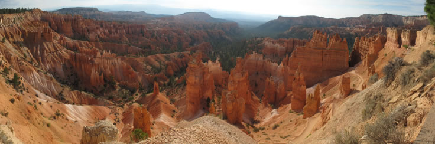
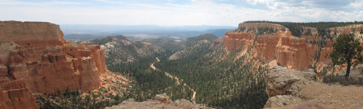
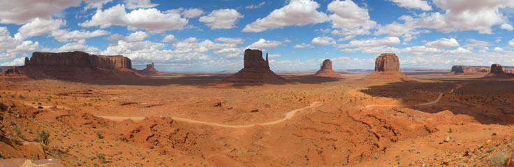

NORD EST
day 1: 28-7-12 sabato
Prima giornata del grande viaggio in USA.
Partenza da casa alle 5,30 :-(
Passiamo a Benna a caricare Dona e Giordi e via al parcheggio Ceriamalpensa, servizio rapido e alle 7,35 siamo al terminal 1 banco Delta.
Con il check in online fatto saltiamo quasi la coda e consegnamo i bagagli, prendiamo i fogli di imbarco e con calma arriviamo sull'aereo che si stacca dal gate alle 9,35 puntuale.
Ottimo decollo, ottimo volo, anche se in economy i sedili sono comodi, le hostess gentili e, una in particolare, bella e carina da non poterci staccare gli occhi di dosso.
Da bere e da mangiare in abbondanza (siamo su un aereo, non una nave da crociera), comunque: 

prima stuzzichini e bibita,
poi pranzo con 1 primo, insalata, formaggio, pane, e birra, e caffè,
poi ancora stuzzichini e bibita,
poi calzone (si, più piccolo ma buono per il viaggio), gelato, birra di nuovo e caffè (sempre il beverone internazionale).
Arrivo in anticipo alle 12 (locali, dopo 8,30 ore di volo),
atterraggio poco delicato (niente applauso).
50 persone davanti all'immigrazione, 15 min. poi ci voltiamo e ne vediamo 5/700 dietro (da paura).
Bagagli pronti (Italia: IMPARA!!!)
Fuori taxi a volontà, e dopo solo 10,30 ore dal decollo siamo in camera. Fico !
E a minuti arrivano fresche fresche da Times square Tania e Alena e finalmente ci riabbracciamo.
Alle 4 del pomeriggio Io, Dona e Giordie ci facciamo guidare da Tania e Alena fino a Time Square.
Silvia rimane in albergo a riposarsi. Fuori dal metrò ci accoglie un bel temporale ma passa dopo poco e noi procediamo ammaliati tra luci sfavillanti e via-vai infinito. TS è davvero straordinaria, consuma il 5% di tutta NYC ma l'effetto finale è un'icona unica.

day 2: 29-7-12 domenica
Ci alziamo alle 7,30 del mattino
andiamo a fare colazione: salsicce, frittatine, pane e formaggio filadelfia, banane, caffè americano con latte e ciambelle
alle 10,30 passate usciamo dall'albergo e andiamo a vedere il ponte di Brooklyn e il ponte di Manhattan.
Andiamo a Brooklyn Heights e da qui ci godiamo Manhattan attraverso l'East River e il ponte di Brooklyn. Spettacolo!

Poi scendiamo sotto il ponte e andiamo a fare una merendina o seconda colazione nel parco da cui giravano gli spot della gomma del ponte. Altro spettacolo!

Attraversiamo a piedi il ponte di Brooklyn. mangiamo sul ponte Hot Dog e frutta nelle vaschette. E' emozionante essere sul ponte e attraversarlo tutto.

Dal ponte si gode di una splendida veduta del Manhattan Bridge.

Poi, a piedi andiamo a Ground Zero, abbiamo visto da vicino la nuova torre che è bellissima ma non entriamo al "9/11 Memorial" perché bisognava fare i biglietti prima ad alcuni isolati più a nord, poi abbiamo bisogno di un bagno, e allora ci infiliamo al Burger King sapete che quei posti hanno sempre dei bagni decenti. Un corno! Due piani di locale e solo 2 gabinetti, 20 min. di coda ma alla fine del pipìt stop siamo rifocillati e in forma e allora andiamo a Wall Street, abbiamo visto il Toro (e qualcuno si è divertito a tastargli le p…e).
 ......
......
Il tempo è stato a tratti nuvoloso, soleggiato, piovoso.
Alle 18,30 Silvia è tornata in albergo in metro.
Paolo, Tania, Alena, Giordie e Dona hanno continuato il giro fino a Little Italy e China Town.
Little Italy è pittoresca ma gli italiani qui hanno il carattere newyorchese e sono simpatici come il mal di denti.
Ti fermano sorridenti per attirarti nel loro ristorante e appena capiscono che non ti fermi non ti c….o più e non ti salutano nemmeno.
China Town ci interessava per mangiare cinese ma i prezzi sono molto alti e la strada degradata dal pattume e puzza.
Cambiamo aria e tra le due zone ceniamo in un ristorante giapponese (piccolo piccolo) a base di sushi. Buono. Proviamo il wasabi: ti fa venire i lacrimino agli occhi, tanto è forte, e non sa di niente. Meno buono!
Una curiosità: nelle docce non c'è la regolazione del getto, per arrivare all'acqua calda devi prima aprire tutto il rubinetto , ecco perché nei film vedi sempre gente che fa docce con getti a palla. Anche i rubinetti dei lavabi sono difficili da regolare. In compenso non esiste il bidè.
day 3 30-7-12 lunedì
Torniamo a TS che sembra essere il centro del mondo (probabilmente metà degli americani abita qui) e ci cucca subito un venditore di tour su bus scoperti.
Ci fa un prezzo che ci va bene, 2 giorni, tutti i tour compreso quello in battello e la torre del Rockefeller center Top Of The Rock (quella degli 11 operai in pausa sulla putrella a 300 m. da terra), il tutto per 70$. Siamo in ballo, balliamo.
Le previsioni sono incerte per il tramonto (in verità sarà bello) quindi andiamo subito al TOTR e ci godiamo uno spettacolo grandioso.
Come leggevo sulle recensioni meglio dell'Empire State Building (ESB) perché c'è meno coda, vedi Central park, ...

... vedi l' ESB, non hai la grata davanti.
Ottima scelta.

Quando scendiamo andiamo al Subway a farci un panino super imbottito con pollo e verdure.
Passeggiata sulla 5 ave.

Giretto in bus dove veniamo a sapere che ci sono cambi di percorso per un incendio vicino a Macy's e la presenza di Obama per una cenetta di beneficenza da 40.000$ a coperto (io non ho ricaricato la carta abbastanza per tutti e allora optiamo per dei panini). Arriviamo fino a Union square poi scendiamo e guardiamo strabiliati un giocatore di scacchi che non lascia nemmeno il tempo di finire la mossa all'avversario che già ha fatto la sua (sembra di vedere me :-( .
Torniamo a "casa" a rifocillarci e prepararci al tour serale sul bus.
Ore 20,20 partiamo e saltiamo sul metro di corsa, arriviamo a Times Square ma dobbiamo attraversarla tutta per andare alla fermata del nostro bus. corriamo come matti e arriviamo tutti sudati mentre il bus sta per partire non è il nostro, dobbiamo svoltare l'angolo ma non lo vediamo. Solo dopo scopriamo che deve ancora arrivare.
Arriva, saliamo, parte e ci facciamo downtown e Brooklyn in mezzo alle luci di NY. Figo !
Ci scaricano a Times Square ed è ancora piena di gente. Dimenticavo, Times Square di notte è uno spettacolo arci super ultra straordinario. O_o Anche di giorno fa impressione, ma il notturno ti rapisce.

day 4 31-7-12 martedì
Il meno emozionante dei giorni passati in città.
Al mattino andiamo a TS a prendere il bus per Uptown NY e ci vediamo Central Park e Harlem. CP è davvero grande e carino, Harlem è meno degradato di quanto ci aspettavamo, anzi direi che l'aspetto sia alquanto normale.
Quando scendiamo da bus ci mangiamo un enorme hamburger che ci basta fino al giorno dopo.
Poi andiamo al pier 78 a prendere il traghetto che ci fa fare il giro di Manhattan dalla 40 esima ovest alla 40 esima est passando da sud mostrando tutto il fulgore della nuova torre del trade world center che sarà la più alta degli USA

e la Liberty Island, dove vediamo la statua della libertà più da vicino senza però scendere a terra.
Quindi a "casa" ad organizzarci per la partenza del giorno dopo mentre Tania, Giordi e Dona vanno ancora a TS per tornare tardi in taxi e dormire tutte e tre nel loro albergo.
day 5 1-8-12 mercoledì
Passati 3 giorni a NY , di cui ci sono foto ma non ho tempo per descriverle, abbiamo noleggiato la macchina alla Dollar.
Era già pagata dall'Italia ma ci son voluti altri 190 $ per il "telepass" che già include tutti i pedaggi dei 10 giorni in auto.
Ci hanno presentato una Kia (minivan) bruttina, sporca e consumata che aveva pure un schienale rotto.
E MENO MALE !
Così ci hanno dato una Dodge gran caravan nuova di zecca (10.000 km.) che è una figata, spaziosa, silenziosa e comoda.

Presa, partiti, primo km. di ambientazione, via sulla expressway verso Boston e #*§xç*° !!!, 4 km. fatti in un'ora e venti !
Ciao ciao NY, con una coda simile sotto la pioggia battente salutiamo NY e andiamo a Enfield, a 160 km. da Boston ma già sulla via per Niagara Falls.
Molliamo i bagagli e ripartiamo x Boston (sono già le 18 passate) dove arriviamo verso le 20 e ci facciamo tre ore nel centro mangiando all' Hard Rock Cafè.

Boston era quasi deserta e si girava e parcheggiava benissimo.
Poi indietro in albergo a nanna per l'1 e mezzo e adesso ci stiamo preparando, doccia, colazione, ecc. per la volta del Canada e le belle cascate.
Ciao a tutti, devo correre perchè tocca a me guidare il cocchio.
day 6 2-8-12 giovedì
Partenza come al solito in ritardo alle 11,20 alla volta del Canada. 650 km. attraverso Connecticut e New York. Passiamo vicino ad Albany, la capitale dello stato.
La strada è bella e si snoda tra le montagne basse (monti appalachiani ?). Verde, alberi, spazio e varietà di livelli, fiumi e qualche palude. Bello.
Arriviamo alla frontiera dopo aver fatto controllare al papà di Alena il ponte meno trafficato (via telefono). Alla frontiera tutto ok, una simpatica canadese ci accoglie a braccia aperte e uno scambio di battute su Marilyn Monroe e le cascate. Passiamo dopo uno scrupoloso e rapido controllo delle identità e dei passaporti.
Il motel è grazioso e le camere spaziose. I letti sono stretti e i materassi non sono un gran che.
Molliamo subito tutto e corriamo alle cascate prima che si rovini troppo la luce.
!!! O_O !!!
Belle, tanta acqua, :-)

Il rombo è pervasivo e la terra intorno vibra in continuazione, una vibrazione molto leggera ma costante. La nuvola di goccioline portata dal vento ti investe come negli spruzzatori di Gardaland, quando le luci si accendono, in serata sembra che le goccioline risalgano fasci luminosi.

Ceniamo in un locale con 4 bistecche 3 birre e un'insalata. Chiediamo se i prezzi comprendono le tasse, rispondono di si ma non è vero. Mangiamo, tutto buono ma quando arriva il conto scopriamo che le birre costano 7,5 $ canadesi più tasse e mancia. Il totale senza mancia è 160 $ americani. Ci ha mentito, niente mancia.
Torniamo in albergo poco dopo mezzanotte.
day 7 3-8-12 venerdì
Lasciamo le cascate del Niagara alle 11,30, destinazione Holland.
Il viaggio va bene, la benzina è cara ( 1,1 euro al litro), il traffico modesto e alla frontiera ci controlla una giovane (?) americana molto bella con occhi straordinari che ci lasci ammirati.
Alla fine dei 630 km. eccoci a Holland, entriamo nella galleria di Kathy (mamma di Alena)

e salutiamo tutti con un sacco di abbracci, conosciamo finalmente la famiglia di Alena e Daniel, il suo ragazzo.
Una bella serata insieme e poi a nanna.
day 8 4-8-12 sabato
Il 18° compleanno di Tania.
Tutto sommato una giornata tranquilla a base di cucina e colazioni (chi presto e chi tardi). Mangiamo in un ristorante cinese dove paghi 8 $ e mangi a volontà.
In serata si va dalla nonna di Alena e festeggiamo i due compleanni con amici loro.
day 9 5-8-12 domenica
Oggi ci alziamo "presto" andiamo alla messa metodista dove suona Daniel. Prima di tutto un rinfresco libero con dolci e caffè poi la messa.
Canti corali all'inizio (vivaci, piacevoli), sermone (non molto originale), preghiere (non tante) e finisce presto.
Mi si avvicina un locale dal cognome olandese che si mette a parlare con me (grosso errore) e dopo un quarto d'ore arriva tutta la mia truppa per liberarlo e portarmi via.
Pranziamo a base di pita e tutto quello che riusciamo a mettere dentro in un locale "mediterraneo" (libanese ?). Molto buono.
Poi si va al Rivertown crossing, un "mall" enorme come quelli americani (ma dai) O_O dove rimaniamo solo noi italiani e compriamo anche i muri: Levi's , Abercrombie e via.

Alle 18 cerchiamo di tornare a casa (di Alena of course) passando a fare un pò di spesa. Il gps non vuole impostare la via di casa allora ci dirigiamo verso una strada conosciuta da Tania che poi ci guida a occhio. Però litighiamo con i sensi unici e ci mettiamo a girare come papere ubriache. Tra l'altro le ragazze avevano comprato delle ciliegie ma si sono poi accorte che erano troppo poche per portarle ai Leshner, così decidono di mangiarle in macchina facendo un casino incredibile e ridendo come pazze. E io a girare tra i sensi unici come un pollo. Le ragazze si raccomandano l'una con l'altra di non nominare le ciliegie per essere gentili, ma io non sento e appena arriviamo a destinazione vado trullo trullo a buttare i noccioli raccontando l'avventura a base di donne ubriacate dalle ciliegie. Per educazione non riferirò le parole che ho udito nei minuti successivi (tutte rivolte a me).
Cena con spaghetti al sugo di salsiccia che prepara Dona. Buonissimi anche se non erano disponibili tutti gli ingredienti.
day 10 6-8-12 lunedì
Giornata tranquilla. In mattinata preparo l'itinerario per Chicago mentre in casa ognuno fa le proprie cose. Nel pomeriggio andiamo in spiaggia al lago. Chiamiamolo lago ! Abbiamo più di cento km. di acqua prima di trovare l'altra sponda. Bella sabbia, un pò di vento, acqua fresca (per loro caldissima).
Cena a base di hamburger da Froggy's, dove lavora Alena.
Serata a preparare i bagagli :-(
day 11 7-8-12 martedì
Partiamo alle 9 dopo tutta la serie di emozionati ed emozionanti abbracci e baci e lacrime a fiumi.
Ci dispiace partire, i Leshner sono una famiglia stupenda.
Ora siamo solo in cinque.
Prima di mezzogiorno (11 ora locale visto che Chicago è un'ora indietro) vediamo la skyline della città mentre percorriamo una di quelle gigantesche strade a 200 corsie che in America portano nelle grandi città. Spicca la Willis Tower, ex Sears Tower.

Il gps ci porta al parcheggio del Millemium Park. Ci informiamo sulle modalità di uso e pagamento (25$) e usciamo nel parco. Dirigo subito il branco verso il "fagiolo" mentre tutte mi interrogano sospettose sulla natura di questo "fagiolo" che voglio che vedano.
Quando ci arriviamo abbandonano l'espressione sospettosa e si divertono tutte intorno al "fagiolo".
Ma che cosa è questo "fagiolo" ?
E' un fagiolo, enorme, tutto riflettente, incurvato e appoggiato su due parti così da permettere il passaggio sotto di esso e ammirare i giochi di riflessi.
Da fuori è spettacolare perchè vi si riflettono i grattacieli di Chicago e l'effetto è straordinario.

Foto a gogò e poi via verso la Willis Tower.
Io guido la comitiva come se fossi del luogo, senza mappa, dimenticata in qualche borsa, perchè ieri ho studiato bene la zona.
Le ragazze non si fidano lo stesso di me. Non hanno sempre torto ma stavolta si, in quattro e quattr'otto le porto davanti al gigante nero.
Un'ora di code varie e poi arriviamo in cima alla torre più alta degli USA (per ora, il TWC di NYC la supererà).
Da questo punto di vista si può ammirare il gigantismo delle strade che porta fin dentro le città americane (che invidia).
La parte particolare è composta dai tre balconi trasparenti (diciamo gabbie di vetro) che si sporgono e ti lasciano sospeso a 412 m. da terra.
 .
.
Però anche qui devi fare coda. Tutto il resto del piano è composto da vetrate che permettono una bellissima veduta ma è piccolo e bruttino come la torre vista da fuori. Non rimaniamo molto a lungo e ci facciamo la coda per prendere l'ascensore verso terra.
Ormai sono le 3 del pomeriggio e abbiamo una fame da lupi, appena scesi ci fiondiamo da Sbarro dove mangiamo decentemente (la cucina qui imita quella italiana).
Fuori di nuovo a 35 gradi verso i canali del Magnificent Mile,

con le ragazze sempre scettiche sulla mia guida, e sempre a torto, perchè anche stavolta arriviamo al posto giusto e ci godiamo il fresco nell' HRC di Chicago dove Dona si compra la maglietta dell'Hard Rock servita da due commessi più femmine di lei che la fanno aspettare fin che non se ne va l'unico cliente maschio; poi però sono gentili.
Discendiamo la Michigan ave con i suoi negozi dove entriamo qua e là e torniamo alla macchina.
Sono quasi le 5 e l'ora di punta che comincia si sente ma facciamo in tempo ad uscire dalla città prima che il traffico esploda.
Tutto calcolato ! Cool ! Ancora 400 km. e siamo in albergo vicino a Toledo ed è qui, in Indiana, sulla i90 lascio guidare Dona mentre io mi riposo un po'.
C'è da evidenziare che Dona indossa scarpe leggere ma ha il piede pesante e io vedo, buttando l'occhio ogni tanto, che il tachimetro rivela spesso l'esuberanza della nostra autista.
Bisogna osservare anche che negli USA sono severi sul controllo della velocità, che qui è 70 mph, ma che normalmente tollerano quelle 5/7 ( 10 sono un rischio) miglia orarie in più (quando i poliziotti non sono di cattivo umore (sono umani no ?)). Non dico nulla a Dona perchè mi ero già speso con poca efficacia, in altra occasione, nel suggerire una guida più prudente.
Comunque sia la nostra pilota di astronave pensa bene di seguire qualche altra vettura così da non essere la prima e quindi non essere quella pizzicata in flagrante e irrispettoso superamento dei limiti. Senonchè, avvolto nella morbidezza della luce del crepuscolo, sento Dona inveire, tutto ad un tratto, verso l'auto che lei seguiva " macchec...ofaquellimbecille?" e, aprendo gli occhi, vedo la vettura oggetto delle gentili attenzioni di Dona accostare bruscamente a sinistra facendosi superare.
E' una questione di mezzo secondo e la mia smodata cultura sui film americani mi fa risuonare tutti gli allarmi ed infatti ecco che, prima della fine del sorpasso, l'auto misteriosa si accende come un albero di natale e ci insegue lampeggiando ( ricordando "incontri ravvicinati di terzo tipo") e rivelandosi per quello che realmente è: la pula!
Ahi ahi!
Ci fermiamo sulla destra e belli dritti e svegli e ordinati (fino ad un momento prima eravamo tutti appisolati in un groviglio di braccia e gambe da fare invidia ad una cassetta di polpi) e attendiamo l'agente, mani sul volante e musetto innocente (fa anche rima).
Appare al finestrino del passeggero un bel poliziottone con tanto di cappellone in testa (dove altro se no?), pistolone nella fondina (meno male) e torcia nella destra puntata su di noi (come nei film). Giordi, dopo un attimo di sorpresa, obbedisce all'invito del supercop e abbassa il finestrino. Mentre l'ispettore Callaghan controlla la patente di Dona e io offro i documenti dell'auto (che lui declina perchè ha già fatto il controlla della targa e già sa tutto di noi) le ragazze lo osservano cou un occhio intimorito e l'altro che sembra dire: " ammazza che figo".
In questa circostanza l'irruenza della nostra Schumacher lascia posto ad un fare morigerato ed incolpevole che farebbe commuovere pure Mangiafuoco e nel dialogo che segue tra lei e Rambo dovete immaginare la di lei vocina come una gentile espressione verbale alla Cenerentola:
"capisce i numeri americani?"
"...siiii..."
"a quanto crede che stesse viaggiando ?"
" ...settantaciiinqueeee ?..."
"Hahaha! settantacinque ! Erano ottantasette !"
"...miii dispiaaace..."
"Mi dispiace, dice lei !" E ci guarda con aria sconsolata.
Fatto sta che per una botta di c..o questo poliziotto decide di non punirci e dopo qualche rimprovero e qualche avvertimento salta sula sua auto e parte alla velocità della luce.
Dona riprende la guida senza più osare oltre le 60 mph e fa bene perchè ritroviamo il supercop appostato poche miglia più avanti lungo l'autostrada.
Finalmente raggiungiamo Toledo e il meritato riposo al nostro albergo.
day 12 8-8-12
800 km di strada per Washington. Dopo 100 mi sento addormentare per il mortorio che c'è. Chiedo di vivacizzare la situazione e tra una fermata e l'altra, giochi di parole e schiaffi e pugni tra me e Giordi il viaggio si anima e non dormo più. Guido fino ad Alexandria dove ci facciamo una pizza familiare da Pizza Hut , porto Dona e Giordi al loro albergo poi torniamo al nostro. Carino, stile motel ma pulito e confortevole.
day 13 9-8-12
Preparato il tragitto tra ieri sera e stamattina, andiamo a prendere le ragazze che sono quasi le 11. Parcheggiamo a Huntington e prendiamo il metrò per DC

aiutati da una gentilissima signora senza un braccio che ci spiega come funziona. Usciamo in centro città, ci saranno 95 gradi fahrenheit ma sembrano centigradi.
Nel parco di fronte al Campidoglio comincio a chiedermi se ho la maglietta con su scritto "fotografo" perchè in diversi mi chiedono di scattare loro delle foto.

Troviamo un'italo-americano che ci regala indicazioni per il tour permettendomi un aggiustamento del percorso.
Giordi è cotta come una pera e bisogna trascinarla. Ci fermiamo a mettere i piedi a bagno nel parco delle sculture, di fianco al museo di storia naturale. Lo fanno solo i bambini, cioè Tania, Giordi e io.
Qui una goccia tira l'altra tanto che la mia dolce bambina mi imita nel toccare lo spruzzo della fontana con il piede ma con una piccola variazione sul tema: lei lo dirige addosso a me, lavandomi tutto e scatenando le ire di un poliziotto che ci scaccia in malo modo mentre noi cerchiamo di fare la faccia da spagnoli per far fare la brutta figura a loro ( i soliti italiani…).
Ci infiliamo al museo , diamo qualche sbirciatina ai dinosauri e al titano boa, un giro ai bagni, battibecchiamo spazientiti ( chi fuori ha caldo, chi dentro ha freddo, fame, sete, stanchezza ecc.), io sono l'unico che sa dove andare (davvero, l'ho studiato il percorso) e nessuno mi segue (profeta in patria) e si perde per i fatti propri.
Finalmente si esce e le ragazze si buttano sull'ambulante degli hot dog. Io dico che siamo vicini all'HRC ma nessuno mi ascolta (di nuovo). Proseguiamo verso nord e passiamo di fronte all'Edgar building, sede dell'FBI. Ci sono le macchinone con la scritta e ci facciamo le foto.

All'incrocio successivo ecco l'HRC (ve l'avevo detto io…) e sembra deserto (all'esterno). Entriamo e scopriamo che tutta DC si è riunita all'Hard Rock. Ci mandano sulla balconata interna, maglio, zona temperata e non ci si gela il c..o come sotto e in mezza America ( normalmente ti devi coprire per entrare nei locali), vista sul'FBI e niente ressa.
Mangiamo, beviamo e facciamo tanta plin plin, usciamo rifocillati e ci fermiamo a comprare i souvenir.
Ci incamminiamo verso la Casa Bianca che si presenta molto lontana e non fa una grande impressione. Fa più impressione la polizia che c'è intorno.

Camminiamo verso i memorial attraversando il grande prato di fronte alla CB dove migliaia di persone trascorrono ogni giorno il loro tempo libero, arriviamo al memorial WWII dove immergiamo di nuovo i piedi nella fontana e le bambine fanno di nuovo casino (spagnole casiniste).

Avanti lungo il Reflecting Pond che Jenny attraversava a piedi per riabbracciare Forrest Gump eroe del Vietnam (ma che sfiga, ci stanno lavorando e non c'è acqua, niente "Jennyyyyyy e Forreeeeeest").

Però andiamo avanti fino al Lincoln memorial dove vediamo, rassicurati, che sul trono c'è seduto Lincoln e non una scimmia.

Ritorno verso il metrò incontrando la banda dei marines che suona nel parco di fronte all'obelisco, le ragazze ne andrebbero matte.
Finalmente si torna in hotel, stanchi come somari e ci mangiamo un'insalatona di Taco Bell portata in camera.
Preparativi per domani e poi nanna.
day 14 10-8-12
Stamattina partiamo con la bella idea di visitare Philadelphia ma passare oltre Washington ci porta via un'enormità di tempo e a Philadelphia ci mettiamo giusto il piede, tanto da dire che ci siamo stati.
Arranchiamo ancora fino a NYC, attraversando il ponte di Verrazzano al tramonto,

dove portiamo Dona e Giordi al metrò, diretto, più vicino al nostro albergo al JFK. Ci salutiamo tra abbracci e baci e sorrisi e poi andiamo in albergo:
!!!!#@]*§!!!! Una topaia !

Puzza, è sporco, è rumoroso, è scassato, lo staff antipatico e non c'è l'ascensore ( mentre pensiamo alle ragazze che si godono la stanza con vista su Manhattan nell'albergo dove eravamo noi all'inizio). Di positivo costa meno degli altri (120$ a notte) e ci sono i croissant a colazione. E intendo punto !
FAR WEST
day 15 11-8-12
Alle 9.30 arriviamo al JFK, consegnamo la fedele Dodge e prendiamo l'air train per il terminal. Facciamo tutti i check-in e alle 12.00 salutiamo la mamma che parte per Milano e andiamo al nostro gate. L'aereo della Virgin America era un pò più nuovo rispetto a quello della Delta che ci ha portati attraverso l'atlantico, i sedili più comodi per le gambe ma disposti 3+3 e io e Tania siamo meno liberi di muoverci. Si parte con 2 ore e 20 di ritardo e dobbiamo pagare a parte tutto quello che mangiamo (soft drink gratuiti e a volontà) ma il pilota recupera quasi un'ora e, dopo un volo con un pò di turbolenze, con un atterraggio perfetto ci troviamo all'aeroporto di San Francisco.
3 ore indietro !
Facciamo i "cool" e prendiamo un taxi. C'è traffico e arriviamo all'hotel alle 18.30 con 53 $ in meno. Fan"cool" !
Almeno il tassista malese era simpatico.
L'albergo ha la struttura delle casa di balcone, la stanza è generosa, come il letto, pulita, profumata e confortevole. Scopriremo che la colazione non è un gran che: caffè, succo, un muffin a testa. La zona in cui siamo confina con la Marina che è un quartiere residenziale con case belle e molto curate.

Dopo esserci sistemati e aver dato le comunicazioni di rito ci mettiamo la giacchetta addosso e usciamo per fare spesa e scoprire qualcosa sui biglietti del bus.
Il vento freddo ci colpisce brutalmente e scopriamo che non tutta la California è un "Cali-forno", qui sembra più un "Cali-frigo".

Per 3 giorni di autobus ci sparano 27$ a testa, come una settimana di metrò a NYC, ma noi siamo vicini al quartiere Marina ed è bello da attraversare a piedi. In effetti useremo il bus solo una volta per andare dall' Exploratorium al garage per prendere l'auto.
Ce ne ritorniamo in albergo e ci prepariamo per domani. Seguiamo online il volo della mamma e le telefoniamo (via google voice) appena atterra, così anche lei sa che siamo atterrati sani e salvi a SF.
day 16 12-8-12
Dopo la grassa colazione ci avviamo verso il Fishermen's Wharf che è il centro delle attrazioni di SF.

E' distante meno di 4 km. e tutta la passeggiata è molto gradevole. Tra l'altro abbiamo aggiunto una maglia pesante sotto la giacchetta e si sta meglio. In baia c'è nebbia, si vede appena Alcatraz e del ponte si sentono solo le sirene da nebbia.
Ritiriamo le tessere della Go Card per 5 giorni e prenotiamo subito la crocierina in battello sotto il Golden Gate Bridge. Intanto esploriamo la zona e visitiamo il museo delle cere. Ci fermiamo in una delle tante bancarelle per assaggiare un panino con granchio e gamberetti (buono).
Quando saliamo in barca ci fanno la foto di rito, ci danno le cuffie e il ricevitore per le varie lingue e troviamo posto in alto, all'esterno, sul lato DX della nave. Bello. Poi scopriamo che l'audio si riferisce sempre e solo a quanto si vede dal lato SX. Sfiga !
Comunque proviamo le emozioni dei pescatori di balene nello stretto di Magellano: un vento gelido pazzesco.
Quando la barca arriva vicino al GGB rallenta e ci lasciano scattare delle foto con meno vento. La nebbia si dirada per pochi minuti ma sufficienti a mostrarci la bellezza e il fascino di questo famosissimo ponte.

Al ritorno assaggiamo una zuppa di molluschi (cozze e simili ?) servita in una pagnotta scavata. Buona anche questa.
Visitiamo l'acquario, dove accarezziamo un piccolo squalo e vediamo piccoli di squalo dal vivo, nell'uovo, in trasparenza. Le meduse sono l'attrazione più colorata.

Poi andiamo all'Hard Rock Cafè di SF dove Tania si compra la prima maglietta classica.
Non possiamo saltare il giro in autobus scoperto e siamo fortunati perchè ci imbattiamo in un autista filippino che parla un inglese accentato e comprensibilissimo che non ci fa da semplice guida ma si lancia in uno show da comico di Zelig. Ci illustra la città in modo molto personalizzato e devo sottolineare che su quell'autobus si ride parecchio. Si merita tutte le mance che gli diamo.

Prima di tornare in albergo compriamo una felpa e un giaccone imbottito per me e dei guanti per entrambi. Adesso si ragiona.
Scegliamo la strada che ci fa percorrere la Russian Hill, la strada più famosa e tortuosa del mondo. Eè sempre su Lombard street, sa medesima dell'albergo, ma 3 km più lontano e, naturalmente, in salita.

day 17 13-8-12
Gran giornata, andiamo a prendere le bici (sempre a 3-4 km. di cammino) e andiamo a Sausalito, al di là del GGB.
Che bello fare una pedalata invece che 10 passi. Ma poi arrivano le salite :-( Non importa, continuiamo e pedaliamo verso il ponte.

Ad un certo punto vediamo un tale con il giaccone dell'FBI: carino, l'avrà comprato a Washington, ha la scritta anche davanti, ce l'ha anche un suo amico, oh, c'è anche la polizia. Ma allora è vero !?
Non del tutto.
Sono tutti attori e scopriamo che stanno facendo riprese cinematografiche. Qualcuno che conosco ? Oh si, Gary Sinise è a 10 metri che sta amabilmente chiacchierando con altre persone.

Naturalmente è inavvicinabile, sta lavorando e lo vediamo girare (due volte) una scena di CSI NY (ovviamente in trasferta). Credo che la vedremo tra un paio di anni in Italia.

Si tratta di un bonus simpatico ma dopo un pò riprendiamo la strada (tanto ha appena arrestato il cattivo e si preparano a smontare), e saliamo fino al ponte. Sosta ai bagni e mentre aspetto Tania conosco una famiglia di cuneesi che ha perso i biglietti del sightseeing bus (35& cadauno) e non sanno come fare, il loro inglese è basso scolastico. Mi offro di accompagnarli all'ufficio turistico presso il ponte e grazie ad una signora molto gentile con cui faccio da interprete, dopo mezz'ora li lascio con la situazione risolta e sono tutto contento di aver fatto la mia buona azione di scout.
Riprendiamo la salita pedalando verso l'inizio del ponte. Qui troviamo una sola delle due corsie laterali aperta e la dobbiamo condividere con i pedoni.
C'è un pò di sole a tratti e la temperatura va scaldando. Quando arriviamo dall'altra parte cominciamo la discesa verso Sausalito e a ogni tratto di discesa che ci godiamo pensiamo che si dovrà risalire :-(
A Sausalito fa un caldo inaspettato, tanto che entrambi ci scottiamo al sole, io sulle mani e Tania sul naso (hahahahahaha).
Che urlo quando si è accorta di essere così rossa!
Parcheggiamo le bici e cerchiamo da mangiare.

Ci attira la vetrina di un negozietto piccolo piccolo con una coda lunga lunga che mostra un cuoco che prepara hamburger stratosferici su una piastra rotante, con tutto il sistema di catena di montaggio per preparare i panini. Ci stiamo ! Aspettiamo un po' mentre io chiacchiero con un giapponese del luogo (si, ho vinto la mia timidezza, una volta tanto) poi ci godiamo questo panino straordinario. Valeva la pena aspettare !
Al ritorno la bici non vuole saperne di andare in salita allora devo pedalare proprio io, che fatica !

Consegnamo le bici, visitiamo un paio di cable car fermi chiedendo informazioni sul funzionamento ai manovratori in pausa poi ci facciamo un panino da Sally, che è un posto strano. Fuori una vetrina aperta per servire e dei tavoli liberi spazzati dal vento (ma non dai camerieri), bruciati dal sole e bombardati dai gabbiani. Una meraviglia !
Poi scopri che c'è un dentro, spazioso, pulito, comodo, con dei servizi che profumano di candeggina.
Dopo la "cena" ci spariamo i soliti 4 km. a piedi, risalendo la Russian Hill (da kamikaze) e, in hotel, dopo una doccia, a nanna come pere cadute.
day 18 14-8-12
Giornata tranquilla in città.
Ci "strafoghiamo" con la solita colazione di 1 muffin :-( e ripartiamo a piotte verso il Fishermen's Warf.
Abbiamo dormito a lungo e ora è troppo tardi per salire sul cable car senza fare un'ora di coda, allora abbandoniamo l'idea e andiamo da Ghirardelli, famoso per la cioccolata. Ordiniamo una cioccolata calda e un bicchierone pieno di gelato al cioccolato, una salsa di cioccolata molto burrosa e panna.

Qui è tutto dolce, troppo dolce, non riusciamo nemmeno a finirlo che la nausea ci sfida. Abbandoniamo.
Torniamo al molo, facciamo i biglietti per un altro giro in barca, che passa sotto ad entrambi i ponti (sempre compresi nelle go card) e ci mettiamo in coda: ci sono le corde che si snodano per fare la fila e nel primo corridoio ci sono 3 panchine. Noi occupiamo la seconda e attendiamo la mezz'ora necessaria mentre la gente arriva. Anche la terza panchina si riempie presto e gli altri stanno in piedi. In Italia non sarebbe pensabile che la coda rispettasse anche chi è seduto ma qui quelli in piedi attendono tranquillamente dopo le panchine, nessuno fa il furbo. Bella cosa la civiltà !
Stavolta saliamo sulla barca dal lato giusto e rimaniamo al coperto. Tutto fila tranquillo e ci godiamo la crocierina.
Scendiamo da questa barca e saliamo su un'altra: la Jeremiah O'Brien, cargo della 2a guerra mondiale restaurato e in attività dove hanno fatto le riprese dei motori per il film Titanic.
Tutto stretto, meglio le navi Costa.

Usciamo da questa e torniamo sul molo, dove decidiamo di provare l'aragosta, 19$ per mezza aragosta. Deludente, meglio i gamberoni.
Pranziamo provando i famigerati fish & chips. Deludenti come immaginavo, anche questi mai più.
Dopo il lussuoso pranzo andiamo verso il centro, attraversando North Beach, il quartiere italiano, dove mi faccio il primo espresso in 18 giorni, e Chinatown, dove compriamo delle banane e addocchiamo un ristorante pulito e ordinato con un bel buffet.
Proseguiamo fino all'emporio Armani, in un palazzo molto bello, dove entriamo a curiosare e troviamo un commessa gentilissima e carica (forse ha visto la maglirtta Armani di Tania sfacciatamente esposta e ci ha presi per veri potenziali clienti). Incontriamo due ragazzi venuti in auto da Washington, Matt e Mike, che ci interpellano dopo aver visto il mio cappellino con la scritta DC. Simpaticissimi, ci spiegano che Yosemite non si pronuncia iosemàit (come credevamo) ma iosèmiti (bene, ora almeno sappiamo dove stiamo per andare).
Union square e poi Alamo, a controllare per la macchina e poi in hotel, sempre a circa 4 Km. Sempre a piedi !
day 19 15-8-12
Ci alziamo e facciamo l'ultima delle mega-colazioni dell'hotel (solito muffin, ma almeno è buono).
Facciamo il cec-aut e lasciamo i bagagli in hotel poi facciamo la passeggiata di un km. verso l'Exploratorium, dove c'è l'antico cupolone di SF. Il posto è bello e dopo un giro all'esterno entriamo nel "museo".

Se a Biella ci fosse un posto simile i ragazzini ne andrebbero matti. Il cartello all'ingresso invita a toccare tutto, sperimentare e apprendere. E' interessantissimo. Tutte le cose che insegnano nelle ore di fisica e chimica e tanto di più sono sperimentabili dal vero.

Ci sarebbe da passare la giornata ma dopo un paio d'ore usciamo e ci avviamo verso la fermata dell'autobus più vicina. Questa volta prendiamo il bus per i quasi 5 km. che ci separano dalla meta: Chinatown, dove pranziamo nel ristorante (naturalmente cinese) addocchiato il giorno prima. Tutto buono e ad un prezzo ragionevole.
Proseguiamo verso O'Farrel street e ci infiliamo nell'ufficio della Alamo dove ci danno le chiavi della macchina dopo aver cercato di affittarcene una più grande. Ce la danno lo stesso più grande, ma senza aumento di prezzo (probabilmente piccola non c'era e ci hanno provato).
Tutti mi guardano strano ogni volta che dico che guiderò per 3000 miglia.
Andiamo al posto auto indicato e vediamo la macchina. Bella ! Una Mazda 3 argento lucida con soli 32.000 km. sulle croste, gran gagagliaio e comoda.

Saltiamo ai nostri posti, colleghiamo il navigatore e partiamo. Direzione: prima in albergo a caricare i bagagli e poi RUSSIAN HILL ! E dove sennò ? Non possiamo evitare di scendere in auto la strada più tortuosa del mondo. C'è una piccola coda da fare per iniziarla, d'altronde è un'attrazione e come tale c'è sempre gente che la percorre con la videocamera accesa (anche noi naturalmente). L'ottovolante è più divertente ma anche qui è bello esserci.

Poi via a tutta velocità verso il Bay Bridge !
C'è la coda e tutta velocità significa 1 miglio all'ora e dopo un'ora abbiamo fatto il miglio che ci separava dal ponte e riusciamo ad attraversarlo. Bene, così possiamo iniziare un'altra coda sull'autostrada che ci brucia quasi un'altra oretta in ritardi così che quando arriviamo ad Alameda dove che la portaerei museo Hornet.
Sono le 17 passate e la Hornet è chiusa. Pazienza, due foto all'esterno e si riparte per Vallejo. Arriviamo verso le 18 al Motel 6 e ci danno una stanza che puzza di fumo e di stantio. WiFi a pagamento e colazione zero.
Un giretto in auto per la zona: a parte il parco giochi tipo Gardaland ma più piccolo non c'è niente. Ceniamo in un Subway e andiamo a dormire.
day 20 16-8-12
In mattinata facciamo colazione da starbucks, poi cec-aut (so che si scrive check-out ma è per i più timidi), mettiamo i bagagli in auto e simuliamo la partenza, poi ritorniamo e parcheggiamo in posizione diversa ( nel caso che qualche malintenzionato avesse notato i polli che riempiono l'auto e poi la lasciano incustodita.
Andiamo a piedi al Six Flags risparmiando 18 $ per il parcheggio (avremmo fatto solo 7/800 m. in meno) e 56 $ del biglietto (incluso nella go-card).
Iniziamo le code per le corse sui vari tipi di ottovolante. Quello nuovo, il Superman, è carino: parte come una formula 1 e poi torna indietro nello stesso modo prima di ripassare davanti alla piattaforma di salita e discesa per la terza volta a tutta velocità (non come per la coda per il ponte) e completare il giro con i soliti attorcigliamenti classici. Lo facciamo tre volte poi la coda si allunga e cambiamo.
Prima di uscire verso le due abbiamo provato i più interessati e siamo soddisfatti.
Scopro che con una piccola deviazione possiamo ripassare dalla Hornet e così facciamo. questa volta arriviamo in tempo e abbiamo quasi 90 minuti per visitarla (alle 16 chiudono l'entrata e alle 17 cacciano tutti).

Dopo 20 minuti chiedo se posso uscire a prendere la felpa (dentro fa freddino) e mi danno l'ok senza tenere conto che sono quasi le 16 e al mio ritorno entro per un pelo. Meno male.
L nave è molto interessante, rispetto al gargo da guerra gli spazi sono maggiori e vedi che l'equipaggio stava meglio. C'è tutto: cucine, ospedale, sale operatorie, salone enorme (per le feste ?), mega hangar (dove giocavano anche a basket), sala briefing per i piloti (proprio come in Top Gun), aerei ed elicotteri di vari tipi. Scopriamo che è la portaerei usata per l'operazione Doolittle, il bombardamento su Tokio effettuato in risposta all'attacco a Pearl Harbour e portata sullo schermo nella seconda parte del film omonimo. Una volta sul ponte principale fa impressione vedere quanto poco spazio era rimasto per il decollo ai bombardieri ammassati sul ponte.
C'è anche un f 14 Tomcat, quello di Top Gun, per intenderci Non me lo lasciano pilotare ma ho speranze per la prossima volta :-)).

C'è anche una navicella Gemini (?) usata per i test senza equipaggio (nel programma Apollo si faceva una missione senza umani prima di quella con gli astronauti) e fa impressione vedere quanto doveva essere dura andare nello spazio (già, perchè di spazio ce n'era solo fuori).
Prima di scendere alle 17 compriamo una cioccolata calda, Tania beve la sua parte ma doveva essere quella di sotto perchè prima ha dovuto bere la mia di sopra (doveva esse buona), e partiamo alla volta di Merced dove c'è il prossimo hotel.
Alti 200+ km. e vediamo il motel, è carino e il gestore è simpatico. Fa un caldo boia e i treni che passano a 300 m. suonano le trombe del giudizio anche di notte. Pazienza.
day 21 17-8-12
Sveglia tranquilla, caffè offerto dalla casa con merendina confezionata.
Compriamo i panini al Subway di Mariposa prima di arrivare allo Yosemite Park (che è a 150 km. dal motel) e ci arrampichiamo verso il parco ( si arriverà a 3000+ m.).
Prima tappa le sequoie giganti. Ci dobbiamo andare con lo shuttle gratuito dopo che all'ingresso il ranger ci fa il biglietto per il parco a 25 $ e ci dice che non c'è più parcheggio presso le sequoie.
Scesi dallo shuttle chiediamo informazioni, mangiamo i panini (e io lotto strenuamente con una vespa che vuole il MIO panino e rischio di inghiottirla ad ogni boccone), andiamo in bagno (un puro cesso composto da una tazza orrenda con un enorme buco diretto ad una deliziosa vasca che raccoglie tutto quanto, meno male che sono un maschio) ed iniziamo il nostro hiking (passeggiata nel verde per chi non l'avesse capito :-)) verso il californian tunnel, che è un gigantesco albero attraverso il quale passa il sentiero.

vediamo anche il grizzly giant, che è una enorme sequoia vecchia come Matusalemme (se fosse ancora vivo).
Riprendiamo lo shuttle e poi l'auto e via verso il Glacier Point, sopra i 3000 m. che vanta una grande veduta della valle. Bellissimo, si vedono le cascate, la Half Dome e El Capitain.

La strada continua ( sono 100 km. di parco, non è come la Burcina ma come il Gran Paradiso e oltre) e a forza di su e giù ci fermiamo a saltellare sui massi erratici, un'altra delle caratteristiche del luogo.

Intanto ci godiamo panorami stupendi con vie alberate, laghetti e scorci straordinari con altre viste delle montagne del parco.


Dopo una strada all'americana, dove tutto è grande (immaginate un rettilineo di 12/15 km. in discesa da 4a con freno motore) passiamo il Mammoth lake e raggiungiamo Bishop e il nostro albergo. Cec-in e altro ristorante cinese (i cinesi ci hanno salvati dagli hamburger), poi nanna.
day 22 18-8-12
C'è un minimo di colazione, qualche pasta, caffè, succo, frutta.
Non abbiamo fretta, la Death Valley a mezzogiorno non è consigliata (comunque ci entreremo alle 13,35). Dopo un pò partiamo perchè la strada si preannuncia lunga e interessante.
Ci fermiamo a fare tutti i rifornimenti: benzina, il pieno, nella DV costa uno sproposito; acqua, 14 litri, panini del Subway e insalata, una boccata di aria fresca, ma non ce n'è neanche qua.
Ripartiamo e dopo un'ora vediamo un paesino che ha un parco verde con panchine all'ombra. E' l'una del pomeriggio e decidiamo di fermarci a fare il picnic al "fresco".
Ripresa la strada incontriamo il Death Valley Visitor Center e ci infiliamo un attimo per avere mappe e informazioni dopo di che viaaaaa, in un viaggio costellato di stop & go per goderci le sensazioni e i panorami.
Prima di entrare nel parco (la Death Valley è un parco nazionale)

proviamo l'ebbrezza del caldo estremo a pochi metri da una tempesta di sabbia (piccola), vento forte e la prima sensazione di essere capelli davanti ad un phon.
Poco dopo l'ingresso la prima sorpresa: un punto panoramico ad un miglio dalla strada asfaltata, raggiungibile a passo d'uomo, lungo uno sterrato pieno di pietre appuntite (occhio alle gomme, non è consigliabile bucare qui) che si apre sulla prima parte della valle.

Uno spettacolo mozzafiato, che le fotografie non possono restituire. Caldo ma emozionante. La valle vista da un km. e mezzo d'altezza è spettacolare.
Dopo un lento e complicato ritorno alla strada principale scendiamo fino alla piana piattissima di sabbia battuta che forma il fondo della valle. Un vero deserto, e mentre scattiamo qualche foto un boato assordante ci sorprende e un caccia (f 16 ?) ci sorvola a bassa quota (un saluto della USAF ? ), grazie, anche questo fa parte dello spettacolo.
A Stovepipe ci dicono che il clima è insolitamente umido ! Per loro è così.
Alle Sand Dunes ci sono 120 f = 49,5°. Qui ci facciamo la passeggiata più calda con un vento forte e bollente che non ci permette nemmeno di sudare, o almeno noi non percepiamo ne vediamo sudore,

anche se a 50° è impossibile che ciò non avvenga quindi significa che evapora istantaleamente. Durante il viaggio beviamo continuamente e a sera berremo tanta acqua (persa durante il giorno).
Dopo le dune sotto il livello del mare risaliamo verso quota 1200/1300 m. slm e una deviazione ci porta a Rhyolite, una città morta con un museo (museo ?) al suo ingresso piantonato da sculture che sembrano essere ispirate dai fantasmi della città e rappresentano l'ultima cena di Leonardo da Vinci,

più una che cerca di imparare ad andare in bicicletta.

Rimane poco da vedere in questa ex città di minatori,

così proseguiamo ed entriamo a Beatty dove vediamo gli effetti della tempesta di mezz'ora prima (che noi vedevamo da lontano), strade invase dal fango e acqua dappertutto.
Alle 18 siamo in hotel, cec-in, costume da bagno, piscina, jacuzzi, insalata al Subway. C'è di peggio nella vita.

Ad esempoi questo di fronte al nostro sarebbe stato il peggio:

In piscina conosciamo altri italiani di modena, sono in quattordici inclusi i bambini, divisi in due pulmini. Tanti auguri anche a loro.
Poi nanna, domani il resto della valle.
day 23 19-8-12
Sveglia sul presto con colazione in camera. Lusso ? No ! E' della serie: fatti il caffè e mangia quello che ti sei portato da fuori.
Riprendiamo il viaggio attraverso la Death Valley, questa volta non attraversandola di traverso come ieri ma percorrendola nel senso della lunghezza ( e che lunghezza).
in questa direzione troviamo Harmony, ex accampamento di cinesi che fino ad un secolo fa lavoravano nell'estrazione del borax. Rimangono i muri della miniera e dell'impianto di raffinazione e gli antichi carri (ora ristrutturati)

che, trainati da 20 muli ciascuno (twenty mule teams), portavano il borax raffinato, viveri e acqua (per un peso fino a 33 tonnellate) lungo la valle della morte e su e giù per i passi fino a centinaia di km. di distanza per raggiungere i mercati di vendita.

Transitiamo in mezzo a Furnace Creek, la "capitale" della Death Valley e, dopo aver ammirato il resort di lusso Furnace Creek Inn (nato per ospitare i dirigenti della borax company), deviamo ancora per visitare il punto più famoso della valle: Zabriskie Point.
E' straordinario, bellissimo da osservare, meriterebbe di essere visto nelle varie ore della giornata.

Tania si fa una scarpinata fino alla base delle formazioni. Lo scopro troppo tardi per seguirla e lei, al ritorno è troppo stanca per ricominciare. D'altronde, anche se ancora mattina, ci sono più di 45 gradi e, dopo la tempesta di ieri, umidi.
Torniamo indietro dalla deviazione fatta e riprendiamo la strada lungo la valle che ci porterà a Las Vegas. La tappa successiva è al Natural Bridge Canyon, una passeggiata in mezzo alle pietre che rivela una ponte naturale in pietra torreggiante sopra il sentiero.

Una cosa interessante scoperta in queste passeggiate è che bisogna sempre chiedere informazioni a quelli che ti vengono incontro, infatti anche qui incrociamo un tedesco che ci dice che non vale la pena andare al di là del ponte, perché la strada dopo è lunga, tortuosa, calda e sempre uguale. E' per questo che ci siamo fatti solo 1,5 km.
Questo canyon si trova alla fine di una piccola deviazione di un paio di km che serpeggia verso la montagna; prima di tornare indietro, verso la strada maestra, vediamo dall'alto quello che sarà in nostro prossimo stop: le Salt Flats di Badwater: un'immensa distesa di sale che ricopre gran parte della valle.

Quando vi arriviamo osserviamo che anche qui tutto quanto è organizzato bene, con parcheggio, servizi, e una specie di pontile che ti porta al di là della parte coperta dall'acqua. Del caldo non parliamone nemmeno, considerando che questo posto è a 85 metri sotto il livello del mare ( quale mare ? Pacifico ? ) anche qui non scherza.

Finalmente usciamo dalla valle della morte e dopo una sosta in una steakhouse dove proprio ci gustiamo la prima bistecca del far west arriviamo a Las Vegas. La torre dell'albergo è visibile da lontano e dopo il check-in (meglio che cec-in ? ) e portato i bagagli in camera facciamo la fila per salire dopo i controlli da aeroporto.

Intanto si fa buio.
Dopo una salita di 100 piani in 30 secondi, lo spettacolo che si apre innanzi a noi è da mozzare il fiato. Las Vegas di notte è uno sfavillare di luci che si distendono su chilometri di deserto, il Las Vegas boulevard si snoda sotto di noi rappresenta il cuore della città, con i suoi lussuosi alberghi scenografici.
La torre permette una visione anche verso il basso, avendo i vetri inclinati a V e all'interno ci sono bar e souvenir. Noi compriamo e mangiamo con un paninone buonissimo con dentro tanta verdura e un arrosto da leccarsi i baffi. Ce lo dividiamo seduti di fronte alla vetrata e poi ci lanciamo verso il centro a bordo della nostra Mazda 3.
Percorrere il Las Vegas boulevard richiede pazienza perché è affollato di turisti che vanno e vengono. Ci infiliamo nel parcheggio dell'Imperial e, quando troviamo la strada per uscire attraversiamo il casinò con i commessi che ci salutano credendoci ospiti dell'albergo.
Fuori fa un caldo boia e dopo un'ora o più lì intorno entriamo al Venetian e ne veniamo colpiti dalla grandiosità e bellezza.


Veri canali all'interno sotto un cielo che sembra vero, una bellissima atmosfera. Ci sono anche le gondole che vanno qua e là.

Tania vede un reparto di gioielli dove espongono ostriche; queste possono essere acquistate e aperte dal vivo per tenerne la perla racchiusa.
A Tania capita una perla argentata che, a detta della commessa, è meno comune e più di valore. Boh ! Vuole venderci una montatura ma a noi va bene così. Abbiamo anche una vera perla di ricordo.
Andiamo a dormire verso le due.
day 24 20-8-12
Facciamo colazione da Starbucks e dopo il cec-aut usiamo ancora la chiave per andare sulla torre. LV è più ordinaria di giorno ma il nostro scopo è quello di provare il Big Shot: una torre come quella di Gardaland dove ti siedi, ti imbraghi e ti sparano 20/30 metri in alto per poi lasciarti ricadere in basso un paio di volte. E' carino, come nel parco giochi, ma in più, qui, c'è da considerare che tutto qusto avviene sul tetto della torre, a 300 m. di altezza.
It's FUN ! It's COOL ! (But not together) :-)
Ritroviamo l'auto nel parcheggio e andiamo all'Hard Rock Cafè di Vegas. Bello, grande, faccio due scatti ricordo a Tania mentre passa un cameriere, vede la maglietta dell'HRC di SF e la busta con i nuovi acquisti di Vegas e ci fa : "vi va di fare le foto sul palco ? E' al piano di sopra, E' chiuso per il concerto di stasera ma se vi accompagno io non c'è problema."
WOW ! Tutto il terzo piano a nostra disposizione. E' una piccolezza ma questa sensazione di esclusività ti rende speciale il momento. Il piano è enorme, con varie sale, un grandissimo bar nel salone e la terrazza che dà su LV boulevard.

Dopo l'HRC ci fiondiamo in strada verso Panguitch e attraversiamo il Nevada, l'Arizona e lo Utah (suona enorme ma in realtà sono solo gli angoli a contatto).
Ci accorgiamo tardi che stiamo viaggiando al contrario del sole e che il Bryce Canyon è 40 km. oltre l'hotel. Andiamo direttamente al Canyon sperando di vederlo al tramonto ma non ce la facciamo. Ci godiamo i colori del tramonto al Red Canyon (sulla strada)

e al Bryce vediamo ancora la sequenza del crepuscolo che incontra la notte ( a queste latitudini dura piuttosto poco, fa buio subito).

L'impatto con il Canyon è grande, lo spettacolo degli Hoodoo (le particolari formazioni di rocce erose e sagomate dal clima e dai millenni) che si vestono di notte mentre il sole ci saluta al di là dell'orizzonte di fronte a noi è magico.

Il luogo è quasi deserto e di nuovo la sensazione che questo posto ci appartenga per un attimo è forte e ci rimane dentro anche mentre ci dirigiamo verso l'albergo, dove arriviamo sul tardi.
day 25 21-8-12
Stamane torniamo al Bryce di buon mattino, alle 8 siamo già a contemplare il panorama con la luce radente dell'alba ( o quasi).

Ci organizziamo per la passeggiata ( acqua, succo, biscotti) e scendiamo lungo la Navajo Trail, che è un sentiero che ricorda la Russian Hill di SF ma più lungo. Sul fondo ci incanaliamo in uno stretto canyon dai magnifici colori


che sbuca sul fondo della valle.
Camminare lungo le vie degli indiani stanca le gambe ma lo spettacolo è continuo.

Pian piano i sentieri si affollano e, a forza di su e giù, dopo 3,5 ore ritorniamo sul bordo dal Bryce, a 10 min. di sentiero in piano dal punto di partenza. Anche questo luogo, come il grosso de questa regione (Utah, Arizona, Nevada), dalla parte occidentale delle montagne rocciose è al di sopra dei 2000 m. di quota.

Continuiamo la nostra visita in auto spostandoci nei vari punti del parco, poi ci dirigiamo verso il lago Powell.
A Panguitch, (dovendoci ripassare) in un locale aperto ma con scritto chiuso (senza che ciò turbasse nessuno, visto che la gente continuava ad entrare lo stesso) mangiamo una bistecchina, presentata come bisteccona, da un proprietario a cui ti veniva da rispondere solo "sissignore".
Ci fermiamo per un caffè in un bar lungo la strada. Fuori ha un grande cartello che dichiara espresso italiano, dentro, senza nè bancone da bar nè sedie o tavoli , una camerierina dall'aria timida mi chiede se lo voglio singolo o doppio (ahimè, cominciano le bizzarrie) e mi chiede se è da bere lì o take away (un espresso take away ? ). Quest'influenza USA sull'espresso smonta le mie aspettative nate dalla pubblicità esterna. Mi sento a disagio perchè non capisco che cosa intenda per take away, un espresso si beve in tre sorsi, cosa lo porto via a fare se siamo scesi tutti dall'auto e siamo entrati ?
Con l'aria di quello che pansa che non sappiano che cosa sia un espresso affermo che non "esiste" un espresso take away ma gliene ordino uno per provarlo (dubito che avessero delle tazzine adeguate comunque).
In realtà la macchina dell'espresso ce l'hanno davvero e il caffè (chiamiamolo così), anche se luuuungo e in un bicchierone di polistirolo è comunque buono (anche se l'espresso italiano annunciato all'esterno è diverso).
Risaliti in macchina Tania mi aggredisce perchè mi sono comportato male verso la cameriera e la discussione prosegue a singhiozzo per un bel po'.
Ci interrompiamo quando vediamo un negozio di alimentari con frutta e verdura. ci fermiamo e scendiamo e Tania si accorge che era così presa dalla sua opera moralizzatrice da salire in macchina lasciando i sandali fuori (a godersi un altro caffè ? ).
"Il tempo passa in fretta quando ci si diverte" e non ti accorgi che guidi e guidi e guidi. Sembrava vicino ma quando arriviamo al bar il contakm segna 50 km. in più !!! 100 km. per le scarpe dimenticate !!! E sotto la pioggia !!! Quasi mi faccio un altro "espresso" !!!
Prendiamo i sandali bagnati e ritorniamo all'alimentari (50 km.) facciamo un pò di spesa approfittando che la frutta e la verdura costano meno del caviale e delle pepite d'oro.
Lungo la strada mi colpisce l'indicazione Coral Pink Sand Dunes e decido di visitarle. Dopo 10 km. un cartello le annuncia ad altri 15 (dirlo prima no eh )
25 km. di strada tipo ottovolante !
Deserta.
Una scarpa tra andata e ritorno, c'è di peggio :-)
Nelle vicinanze delle dune, quando già si intravedono un pulmino sta scaricando una famiglia di Hamish nei loro costumi tradizionali e le bambine vestite come suore corrono verso la sabbia ( perchè si sono fermati prima delle dune ?). Lo scopriamo quando ci arriviamo noi : 6 $ di ingresso.
Torniamo indietro di un km. e ci fermiamo in uno spazio attrezzato. Gratis ! E ci incamminiamo verso le dune.
Carine, rosa, sabbiose.

Lasciamo segni sulla sabbia per ritrovare la strada per la macchina ( potevo fare l'esploratore).
Tania se ne fa una pelle e comincia a scrivere messaggi di saluti e di auguri e dopo mezz'ora la invito a ritornare all'auto perchè c'è da camminare e da guidare ancora a lungo ( almeno altre 3 o 4 scarpe).
Prima di entrare a Page vediamo un grosso temporale di fianco a noi e fotografo la grande colonna d'acqua che scende dai nuvoloni neri; è buio e un lampo dietro l'acqua mi regala un effetto interessante.


Poi andiamo in albergo e ci prepariamo una povera insalata con il tonno che manca dei nostri sapori natali. Ma sai, la sopravvivenza …
day 26 22-8-12
Oggi si parte per la Monument Valley, non c'è fretta, la voglio vedere al tramonto ed è a soli 2/300 km. Ormai mi sono abituato alle distanze americane e sembra dietro l'angolo. D'altronde è a sole 4/6 scarpe di distanza ! :-))
Vista la propensione a fermarci ad ogni albero decido di partire prima di mezzogiorno.
Infatti dopo meno di un'ora di guida troviamo alla nostra destra Kaibito e andiamo a scoprire che cosa sia.
Un villaggio Navajo molto povero con un distributore e un negozio di "vendo tutto qui dentro" (olio motore, ferramenta, rosticceria, ecc.).
Di fronte c'è un chiosco di cibarie con due tavoli di plastica bianca e relative sedie. Dopo un giro intorno al villaggio, che vanta una scuola nuova e bella e l'elettricità da ben sette anni e internet da almeno uno, decidiamo di provare il ristoranante rurale indiano e ci fermiamo al chiosco dove una signora sui 30/35 sta cucinando una succulenta bistecca sulla piastra. Ci avviciniamo e chiedo: "Salve che cos'è questa ?" e l'indiana dalle forme generose risponde:" E' mia !".
Punto.
Chiedo se ne ha altre ma risponde di nuovo che quella è sua ma per noi ci sono hamburger o del "mutton", che sarebbe carne pecora ( morta di vecchiaia ?).
Vogliamo provarci lo stesso e chiediamo il mutton che ci viene servito su una tortilla cotta al momento e appoggiata sul braccio ignudo della squaw spalmata poi di mutton a mò di panino e servito su un piatto di polistirolo con patata e mais bollito.
Acqua non se ne vede (nemmeno per lavare le mani) e la donna, mentre si addenta la propria bistecca, coccola il cane pulcioso che ronza qua attorno.
Speriamo negli anticorpi !
Quando vediamo che di posate non se ne parla capiamo che si mangia con le mani. Intanto ci eravamo accomodati e avevamo fatto la conoscenza della zia dell'indiana, una Navajo purosangue ( mentre la nipote è mezza Navajo e mezza Sioux).
Questa zia è simpaticissima e parla volentieri un inglese correttissimo e ci rivela la storia della sua vita, da quando, bambina, sopravviveva con poche pecore, quando si costruivano i giocattoli con pezzi di legno e pietra, quando imparavano l'inglese con l'ausilio dei fumetti, a quando ha deciso di fare in casa decorazioni fiorentine viste su una rivista. Già, questa donna straordinaria che è cresciuta con poche pecore e ama il suo deserto, parla di politica spicciola e nazionale con cognizione di causa e che, come tutti gli americani, mette davanti a tutto gli Stati Uniti (anche prima della nazione Navajo), conosce e apprezza l'arte italiana e si chiama come la moglie di re Artù, Genevie.
A Tania viene in mente di dividere il melone comprato il giorno prima con loro e così facciamo. E' stato un momento intenso e commovente e molto inaspettato che ha dato conferma alle parole della mamma di Forrest Gump: " …non sai mai quale cioccolatino ti capita…". Non sai mai quale ostrica ha una perla dentro di sè !
Dopo aver salutato e fatto una foto insieme con la nostra amica Navajo, ancora avvolti dalla nuvola di poesia evocata dall'inaspettato incontro, proseguiamo verso la nostra meta.
Ci arriviamo due ore dopo, verso le 16 ora locale.

E' bella, rievoca i western che mi hanno cresciuto da bambino, è più evocativa per me che per Tania. Per lei, dopo il Bryce Canyon, l'impatto emotivo di questa valle è minore.
Vi entriamo con l'auto, la strada è una pista di terra rossa che si snoda tra i butte che ne hanno fatto un'icona degli USA. Il tempo non è il massimo e così la luce, ma volevo vederla e mi dico soddisfatto. Si viaggia a passo d'uomo e Tania propone di guidare lei. E' la cosa più illegale che possa fare in quel momento ma non vedo pericoli reali e le cedo il posto di guida.

Dopo mezz'ora di divertimento (per lei) e tensione (per me) torniamo verso l'uscita del parco e riprendo il controllo del mezzo.
La strada per Flagstaff è lunga e un temporale esteso che ci affligge nella serata non aiuta a guidare rilassati ma alla fine arriviamo in albergo e ne siamo contenti.
day 27 23-8-12
Si parte la mattina, dopo la colazione fatta in camera con caffè del motel e biscotti nostri, e affrontiamo i 140 km. che ci separano dal Grand Canyon.
Appena arrivati facciamo la breve coda al visitor center (i rangers hanno sempre buone dritte da darti) e non sbagliamo: ci confermano che il nostro piano di dedicare 3 ore ai sentieri, un'oretta al pranzo e il resto alle visite lungo il parco con la nostra auto, è perfettamente adatto alla singola giornata che trascorreremo qui. Però, per la nostra passeggiata, ci indicano un punto più panoramico e meno frequentato rispetto a quello più conosciuto a cui mi sarei diretto senza la saggia indicazione.
Devo dire subito che questa scelta ha reso grandiosa la giornata.
Prima di prendere lo sciattol (shuttle si scrive così, vero ?) trotterelliamo i 200 m. che ci separano dal primo punto panoramico del Canyon più famoso de mondo. Il cielo non è bello, la luce risente della leggera foschia che cerca di diluire l'impatto visivo di un passato che dischiude di fronte all'uomo i suoi remoti segreti.
Non ci riesce !

Milioni di anni di sedimenti e di erosioni salutano gli ultimi arrivati con la maestosità di una scultura al cui cospetto si inginocchierebbe anche Michelangelo.
La natura ha formato una ferita profonda e rivelatrice e l'emozione di riconoscerne l'imponenza e la realizzazione di questa consapevolezza mi pervadono interamente e mi fanno sentire orgoglioso di appartenere al genere umano.
D'altronde, è la grandezza dell'umano pensiero che ammanta di grandezza l'opera della natura inconsapevole.
Diciamo che il Grand Canyon mi piace.
Poi prendiamo il bus che ci porta all'inizio del sentiero che vogliamo percorrere. Iniziamo la discesa (siamo sempre a 2+ km. di quota e qui la montagna si scala dopo la discesa) e presto gli scorci si impongono e chiedono di essere fotografati.


Qui in America la gente è più civile e gentile ( quelli più avidi e cattivi di solito li eleggono così poi mandano il popolo in guerra) e se tu ti fermi per fare una fotografia loro si fermano e aspettano che tu finisca ( succede anche in auto, se stai iniziando una manovra per uscire da un parcheggio si fermano e aspettano quieti; in Italia ti suonerebbero l'Aida con le trombe). Così fa anche un ragazzone marchiato USA che sta scendendo dietro di noi ( scoprirò poi che si chiama Dan Amato e che ha i nonni italiani), e io lo ringrazio e alla seconda fermata inizio a chiacchierare con lui.
Sapete tutti che normalmente sono riservato e non parlo con gli estranei, ma in quest'occasione la cortesia impone di rivolgere la parola al compagno di hiking e io gli parlo ("…e lo sventurato rispose…" hahaha, grazie Alessandro, era un Giampaolo anche quello).
Comunque salta fuori che è un controllore di volo preparato sotto le armi e poi passato al civile, che ha lavorato in diversi aeroporti negli USA (e sembra aver abitato o aver parenti in tutti i luoghi che abbiamo visitato) e ora lavora in quello del GC. Gentilissimo, ci racconta del suo amico canyon suggerendoci fin dove andare e descrivendoci le caratteristiche del luogo nelle varie stagioni.
Scendiamo fino a quello che da noi sarebbe un rifugio e dopo esserci rifocillati con dei biscotti e simili ci apprestiamo a risalire.
Devo mettere in evidenza quanto sia bello scendere verso il fondo del canyon lungo la mulattiera che non è troppo ripida né troppo piana. Ad ogni curva c'è un punto di vista nuovo e la luce cangiante con questo tempo variabile impedisce agli occhi di annoiarsi.
C'è un punto che si apre all'improvviso su una parte nascosta fino a quel momento e che sorprende sempre l'ignaro viandante tanto da chiamarlo con il nome: "ooh, aah point".

Ci vorrebbero 2 giorni a disposizione per divertirsi a scendere fino in fondo e noi ci dobbiamo accontentare del primo step,

così ci dispiace muovere i primi passi in salita (anche perchè sono in salita e l'altra faccia del cartello, che è a metà strada, potrebbe essere :"puff, pant point").
Anche Dan risale con noi e mentre Tania segue il suo passo e ci distanzia con la musica nelle orecchie noi due ci arrampichiamo chiacchierando.
Arriviamo in cima senza morire per strada e con la bellissima sensazione di aver vissuto il canyon nel modo giusto, seppur per poco. Salutiamo Dan e torniamo allo sciattol con la soddisfazione di aver fatto la passeggiata più bella della vacanza.
Prendiamo la macchina e usciamo dal parco (pochi km.) per pranzare in una steakhouse stile far west dove mangiamo bene e spendiamo il giusto per il luogo (45$), anche se lo staff è simpatico come il mal di pancia.

Durante il pomeriggio esploriamo i 40 km verso NE fino a Desert View, dove negli anni 20 hanno costruito una torre in stile per farci un punto di interesse (vendita dei souvenir ? ).
La foschia riesce rovinare il panorama e noi ci compriamo un gelato che andiamo a mangiare pochi km più a valle, al Navojo Point.

Usciamo dal parco facendo una strada diversa e più breve per Flagstaff (dopo Desert View) e lungo questa via ci godiamo scorci e tramonto che coronano la giornata intensa e bellissima.
day 28 24-8-12
Oggi si parte per la tappa più lunga del nostro viaggio, quasi 800 km. fino a Los Angeles ma io sono in forma e il viaggio va benissimo e arriviamo a Hollywood in tempo rekord alle 17.
Un'ora dopo siamo già lungo Hollywood boulevard a camminare tra le stelle e qui ci piottano e propongono un giro in pulmino scoperto a scoprire (haha) i segreti di Hollywood.

Vabbè, proviamo, anche se sembra tardi e si sta facendo buio. L'autista è simpatico, parla come una macchinetta ma sarebbe comprensibile se lo sentissi bene e direttamente, ma il vento, il rumore e il volume non sufficiente per le mie povere orecchie, mi limitano molto il comprendonio.
Ci illustra case e cose e fatti avvenuti e su richiesta della mia bambina ci porta in gran segreto e di frodo nella parte proibita di Beverly Hills dove c'è, tra le altre, la casa di Brad Pitt.
Tira come un matto e ci dà una coperta per ripararci dal freddo.
All'arrivo gli diamo la mancia, meritata, chiacchieriamo un pò e mi da del matto per tutta la strada che ho fatto nelle città USA.
Doverosa la tappa all'HRC di Hollywood con qualche foto di rito e la maglietta ricordo.
Seguiamo il consiglio della guida di prima e prendiamo un hamburger all'in & out. E aveva ragione, ottimo e ottimi prezzi.
Tutto quanto infarcito sempre di passi tra le stelle leggendo i nomi famosi e sconosciuti (a noi). All in all Tania è entusiasta di Hollywood, anche a me piace, la trovo divertente con le sue eccentricità, i personaggi dei film che vagano per le strade facendosi fotografare ( a pagamento of course) e i tantissimi sballati che chiedono l'elemosina, anche due per angolo; uno l'abbiamo trovato seduto dentro al cestone della spazzatura.
day 29 25-8-12
Mi sveglio alle 5,20 e chiamo Tania proponendo di andare subito a vedre l'alba da un punto panoramico sulla Mulholland drive. Lei accetta subito e partiamo. Arriviamo in posizione presto ma l'alba ci tradisce, smog e nebbia la fanno da padroni e noi proseguiamo per vedere più da vicino il cartellone di Hollywood. Ci riusciamo, arriviamo abbastanza vicini da vederlo bene.

E' ancora presto e approfittiamo del traffico leggero per andare a visitare Rodeo drive. La via è deserta e la percorriamo su e giù varie volte, tra i negozi di lusso e le grandi griffe. Con questo e il Wilshire hotel in fondo alla via vediamo tutte le ambientazioni di Pretty Woman: L'albergo in cui passa la settimana a pagamento, la via con i negozi dove fa lo shopping e l'albergo dove viveva con l'amica (vicino al nostro). E' piacevole scoprire i luoghi visti nei film.
Poi torniamo in albergo.
Oggi si torna verso San Francisco ma prima bisogna dare l'assalto al mega-negozio di scarpe visto la sera prima,

così, dopo la colazione (con vere paste da pasticceria offerte dalla casa), carichiamo la macchina e facciamo il cec-aut. Così, dopo la prima mezz'oretta passata tra le scarpe riesco a defilarmi e andare a recuperare l'auto per guadagnare tempo. Quando torno Tania ha trovato una buona occasione con un paio di "do me shoes" (scarpe alte da serata in tiro) di marca che compriamo prima di un salto al'in & out di fronte e la definitiva partenza da Hollywood.
Dopo un lungo viaggio che ci porta sul lungomare di Santa Barbara e nelle deserte vie di Los Alamos verso le 18 arriviamo a Grove Beach giusto per scoprire che la spiaggia californiana: sabbia caldo, mare e bay-watchers non esiste, qui fa freddo e l'acqua è gelida.

Tania scrive gli auguri di buon compleanno per Alena e io vengo inondato fino alle caviglie mentre riprendo l'opera della mia dolce creatura.
Dopo esserci sistemati in motel cerchiamo un posto per cenare e ci convinciamo a tentare una cena messicana con cameriere blackxican simpaticissimo. La cena è un disastro, così piccante che mi sono ustionato coprendo la bocca con la mano per starnutire. Mai più messicano !
Andiamo a dormire perchè domani si arriva a SF.
day 30 26-8-12
Rimaniamo a nanna fino alle 8,30 !
Partiamo riposati e ci fermiamo per pranzare con una bistecca in un diner sulla 101. Diner classico con tavoli alle finestre e sgabelli al bancone. Come nei film.
Arriviamo a San Bruno, vicino all'aeroporto di SF e in albergo organizziamo le valige per domani.
day 31 27-8-12
Sveglia alle 6, restituzione dell'auto con 4800 km in più, e volo per NYC.
All'atterraggio chiamiamo lo sciattol del Topaia Inn che ci porta a destinazione.
La camera fa meno schifo della precedente che avevamo la notte del 10 agosto ma è comunque una topaia.
day 32 28-8-12
Colazione decente e abbondante arraffando qualche croissant per il viaggio e per mammà. Cec-aut e sciattol per il JFK.
Alle 17 lasciamo il suolo statunitense per tornare a casa.
Il viaggio va benissimo. La vacanza è stata indimenticabile.